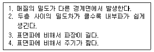
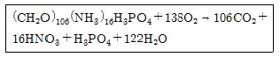
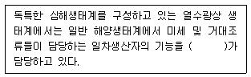
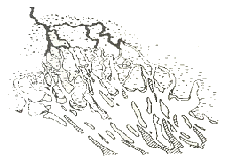

해양조사산업기사 (2007-05-13 기출문제)
1과목: 물리해양학
1. 지형류(geostrophic current)의 방향은?
- 해안선에 평행
- 등고선에 수직
- 등압선에 평행
- 등압선에 수직
(정답률: 87%)

2. 대양 해수 성질에 관한 설명 중 옳은 것은?
- 태평양의 표면평균염분은 대서양의 표면평균염분보다 낮다.
- 평균 용존산소농도는 태평양 심해가 대서양 심해보다 높다.
- 태평양의 위도별 평균 염분은 적도에서 최대이다.
- 해수의 투명도가 높다는 것은 생산성이 높다는 것을 뜻한다.
(정답률: 82%)
3. 다음 중 직접 해류측정이 가능한 기기는?
- ADCP
- CTD
- NOAA-11
- Echo-Sounder
(정답률: 87%)
4. 해파에 의해서 발생되는 해류가 아닌 것은?
- 파송류
- 연안류
- 이안류
- 경사류
(정답률: 87%)
5. 서안경계해류와 동안경계해류의 특징 비교 설명으로 틀린 것은?
- 동안경계해류는 연안류와의 경계가 분명치 않다.
- 같은 위도에서 동안경계해류와 서안경계해류의 방향은 반대이다.
- 동안경계해류는 대개 난류이고 서안경계해류는 한류이다.
- 동안경계해류의 유속이 느린데 반하여 서안경계 해류는 빠르다.
(정답률: 78%)
6. 태양의 기조력은 달의 기조력의 몇 % 정도인가?
- 약 36%
- 약 46%
- 약 56%
- 약 66%
(정답률: 85%)
7. 다음 중 상부 혼합층의 두께가 가장 작아지는 계절은?
- 봄
- 여름
- 가을
- 겨울
(정답률: 73%)
8. 해수중의 소리의 전파속도에 관한 설명으로 옳은 것은?
- 수온이 증가할수록 빨라진다.
- 수심이 깊어질수록 늦어진다.
- 염분이 감소할수록 빨라진다.
- 수온, 수심 및 염분과는 관계 없다.
(정답률: 85%)
9. 파도에서 물입자 운동에 관한 설명 중 틀린 것은?
- 봉우리와 전방골짜기의 중간에서 수렴하여 상승운동이 일어난다.
- 심해파의 경우 파장의 1/2 깊이에서 무시할 만큼 작아진다.
- 천해파일 때 물입자 궤도는 해저의 간섭을 받아 장타원이 된다.
- 천해파의 파속은 파장이 클수록 빠르다.
(정답률: 61%)
10. 해양 표층의 흐름에 직접적으로 영향을 주는 요소와 가장 거리가 먼 것은?
- 바람의 작용
- 용존산소
- 해면의 경사
- 밀도의 불균등한 분포
(정답률: 81%)
11. 다음 중 황해에서 이용할 수 있는 가장 좋은 에너지는?
- 조석에너지
- 파랑에너지
- 온도차 발전에너지
- 평균대조저조면
(정답률: 92%)
12. 우리나라 해양이 수심은 다음 중 어느 것을 기준면으로 채택하고 있는가?
- 최저저조면
- 대조평균저저조면
- 인도대조저조면
- 평균대조저조면
(정답률: 84%)
13. 해류는 물리적인 힘이 작용하여 생기는 것이며 해수의 운동을 일으키는 힘을 제 1차적인 힘이라고 한다. 다음 중 제 1차적 힘이 아닌것은?
- 중력
- 질량분포에 의한 힘
- 지구자전의 전향력
- 바람의 응력
(정답률: 68%)
14. 다음 중 해양의 온도를 측정하는 기기가 아닌 것은?
- STD
- XBT
- BT
- DTP
(정답률: 63%)
15. 지구 표면적에서 바다가 차지하는 면적은?
- 약 50%
- 약 60%
- 약 60%
- 약 80%
(정답률: 79%)
16. 수괴를 분류하는데 가장 많이 사용되는 물리량은?
- 수온, 압력
- 염분, 산소
- 수색, 탁도
- 수온, 염분
(정답률: 93%)
17. 관성운동(intertial motion)에서 원운동의 운동주기는? (단, f는 Coriolis parameter)
- 2π/f
- π/f
- f/2π
- f/π
(정답률: 95%)
18. 연중 거의 일정한 방향, 일정한 강도의 바람이 부는 무역풍에 의한 해류는?
- 적도해류
- 적도반류
- 쿠로시오
- 북태평양 해류
(정답률: 67%)
19. 다음 중 내부파에 대해 옳게 설명한 것으로만 짝지워진 것은??

- 1, 2
- 1, 3
- 2, 3
- 3, 4
(정답률: 73%)
20. 조석 조화상수에 관한 설명 중 옳은 것은?
- 인천항의 평균해면은 조화상수를 계산하는 기준이다.
- 1910년 1월 1일 0시의 달의 적위는 조화상수를 계산하는 기준이다.
- 부산항의 M2 분조의 지각은 조화상수이다.
- 각국의 조화상수는 국제수로국으로부터 부여받은 국가별 고유상수이다.
(정답률: 81%)
2과목: 화학해양학
21. 해수의 화학적 성분 중 미량금속을 분석할 때 일반적인 방법으로 많이 사용되는 것은?
- 원자흡광광도계
- 동위원소 희석질량분석법
- 형광 X선법
- 용출 전압전류법
(정답률: 83%)
22. 해양의 유기물분해과정은 아래 식으로 나타낼 수 있다. 이 식에서 생성되는 이산화탄소와 사용되는 산소의 분자비를 호흡율이라고 한다. 이 값은 얼마인가?

- 106
- 138
- 7.8
- 0.78
(정답률: 82%)
23. 일반 외양역에서 인산염과 질산염의 극대층이 나타나는 수층은?
- 유광층
- 수온약층 바로 아래 수층
- 심층
- 수온약층 바로 윗 수층
(정답률: 83%)
24. 유류오염이 해양생태계에 미치는 영향 설명으로 틀린 것은?
- 대기로부터 산소의 용해가 차단되어 무산소상태가 된다.
- 어패류의 상품가치를 떨어뜨린다.
- 심한 경우 어패류를 질식시킨다.
- 식물플랑크톤의 광합성 작용을 방해한다.
(정답률: 75%)
25. 해수의 주요성분(主要成分)을 전주요성분(全主要成分)에 대한 중량비로 나타낸 것 중 바르게 표현된 것은?
- Mg > Ca > K > Sr
- Ca > Mg > K > Sr
- K > Sr > Ca > Mg
- Sr > K > Mg > Ca
(정답률: 73%)
26. 물의 빙점 및 최대 밀도에 대한 설명 중 틀린 것은?
- 해수의 빙점은 염분이 증기함에 따라 내려간다.
- 해수는 -1℃에서 최대 밀도를 가진다.
- 염분 24.695‰ 이상의 해수는 빙점보다 최대 밀도가 되는 온도가 낮다.
- 순수는 0℃에서 얼고 4℃에서 최대 밀도를 가진다.
(정답률: 66%)
27. 해수에 녹아 있는 염류 중에서 짠맛을 내는 주 성분은?
- 염화칼슘
- 염화마그네슘
- 염화나트륨
- 황산마그네슘
(정답률: 90%)
28. PCB(Poly Chlorinate Biphenyl)의 화학적 특성이 아닌 것은?
- 높은 안정성
- 수중에서의 높은 용해도
- 낮은 휘발성
- 높은 절연성
(정답률: 91%)
29. 다음 중 해수의 pH를 감소시키는 요인과 가장 거리가 먼 것은?
- 수온 증가
- 대기 중의 CO2 분압 증가
- 호흡활동 증가
- 해수 중 CaCO3 용해량 증가
(정답률: 61%)
30. 해수 중의 요오드에 관한 다음 설명 중 틀린 것은?
- 굴에 많이 함유되어 있다.
- 해조류에 다량의 요오드가 있다.
- 새우는 요오드를 거의 함유하고 있지 않다.
- 하천수보다 해수에 더 높은 농도로 존재한다.
(정답률: 90%)
31. 해저상태가 산화환경보다 환원환경이 되면 쉽게 녹지 않는 것은?
- 크롬
- 망간
- 철
- 납
(정답률: 74%)
32. 해수 중에 용존되어 있는 산소 8㎖/ℓ는 몇 ppm 인가?
- 2.5ppm
- 8.0ppm
- 11.4ppm
- 16.0ppm
(정답률: 75%)
33. 다음 해수의 특성 중 염분이 증가할 때 감소하는 것은?
- 이온강도
- 열팽창계수
- 열전도도
- 삼투압
(정답률: 64%)
34. 외양역에 있어서 용존산소의 전형적인 수직농도분포 특성에 대한 설명 중 옳은 것은?
- 용존산소는 표층부근에서 높고, 수심이 깊어질수록 계속적으로 감소한다.
- 용존산소 극소층은 수온약층 상부에 존재한다.
- 중층에서보다 광합성층에서 용존산소 농도가 낮아진다.
- 용존산소 극소층은 수온약층 바로 아래 수층에 존재한다.
(정답률: 69%)
35. 해수 중의 입자를 크기가 큰 것부터 순서대로 나열한 것은?
- 참용질 > 콜로이드입자 > 현탁입자 > 침강입자
- 콜로이드입자 > 현탁입자 > 참용질 > 침강입자
- 현탁입자 > 침강입자 > 참용질 > 콜로이드입자
- 침강입자 > 현탁입자 > 콜로이드입자 > 참용질
(정답률: 75%)
36. 북대서양과 북태평양 심층수의 용존산소와 영양염의 농도를 비교하면?
- 북대서양에서 용존산소의 농도는 높고, 영양염 농도는 낮다.
- 북대서양에서 용존산소의 농도는 낮고, 영양염 농도는 낮다.
- 북태평양에서 용존산소의 농도는 높고, 영양염농도는 낮다.
- 북태평양에서 용존산소의 농도는 낮고, 영양염 농도도 낮다.
(정답률: 61%)
37. 다음 중 편모조류로 인한 적조 발생의 주요인이 되는 물질은?
- 규산염
- 중금속
- 유기성 생활 오폐수
- 염화탄화수소
(정답률: 78%)
38. 해수 중의 칼슘에 관한 설명으로 옳은 것은?
- 표층은 저층에 비해 칼슘농도가 현저히 낮다.
- 강어귀에는 칼슘농도가 낮다.
- 광물질의 침전과 관계가 없다.
- 패류의 잔유물에 함유되어 있지 않다.
(정답률: 85%)
39. PCB 특성에 관한 설명 중 틀린 것은?
- PCB는 변압기나 콘덴서 제조시 가소제로 사용한다.
- 지속성이 매우 길다.
- 독성이 매우 강하다.
- 해수 중에 잘 용해된다.
(정답률: 85%)
40. 해양의 수괴추적자로서 이용되고 있는 방사성 핵종 중 14C의 반감기는?
- 약 500yr
- 약 53day
- 약 5.75yr
- 약 4.47× 109yr
(정답률: 68%)
3과목: 생물해양학
41. 해양의 광합성 보상심도(compensation depth)의 정의는?
- 광합성량이 최대인 깊이
- 광합성량이 최소인 깊이
- 광합성량과 호흡량이 동일한 깊이
- 광합성량이 호흡량의 정확히 두배가 되는 깊이
(정답률: 95%)
42. 해양의 식물플랑크톤 기초생산력 측정방법과 가장 거리가 먼 것은?
- 탄소동위원서 14C 측정법
- 명-암병법(Light and dark bottle method)
- 건중량 측정(dry method)
- 엽록소 측정(Chlorophyll method)
(정답률: 78%)
43. 온대지방 연안 해역에 있어서 여름철 표층의 기초생산이 저하되는 가장 큰 원인은?
- 높은 염분 농도
- 일사량의 과다
- 적조발생
- 영양염의 고갈
(정답률: 83%)
44. 다음 저서동물 중 호흡수(樹)를 가지는 동물은?
- 해삼
- 불가사리
- 성게
- 개불
(정답률: 67%)
45. 다음 중 재생력이 가장 약한 동물은?
- 해면
- 플라나리아
- 불가사리
- 굴
(정답률: 91%)
46. 해수 중의 무기영양염류를 필수적으로 필요로 하는 생물은?
- 어류
- 저서동물
- 식물플랑크톤
- 동물 플랑크톤
(정답률: 94%)
47. 다음 중 강하성(降下性) 어류는?
- 뱀장어
- 연어
- 송어
- 전어
(정답률: 89%)
48. 플랑크톤의 구분에 대한 설명 중 옳은 것은?
- 식물플랑크톤과 동물플랑크톤 그리고 중성플랑크톤으로 구분한다.
- 크게 식물플랑크톤과 동물플랑크톤으로 구분한다.
- 광합성 플랑크톤과 비광합성 플랑크톤으로 구분하는 방법밖에 없다.
- 크게 운동성 플랑크톤과 비운동성 플랑크톤으로 구분한다.
(정답률: 93%)
49. 다음 중 Euphausiacea 목에 속하는 동물군의 특징으로 틀린 것은?
- 갑각은 아가미 부분을 전부 덮지는 않는다.
- 가슴다리(흉지)는 maxilliped(하악지)로 분화되어 있지 않다.
- 가슴다리(흉지)의 일부에 발광기로서 photophores를 갖는 종이 있다.
- 배다리(복지)는 헤엄을 치기에 적합하지 않다.
(정답률: 85%)
50. 뻘해안과 모래해안의 환경특성과 그곳에 서식하는 생물의 생태적 특징 설명으로 틀린 것은?
- 뻘해안의 표층 수~수십 cm 아래로 내려가면 퇴적물의 색이 검어지고 무산소층이 나타난다.
- 모래해안은 저층이 끊임없이 움직이므로 대형 저서식물이 서식하기 어렵다.
- 뻘해안은 모래해안에 비하여 유기물의 함량이 적다.
- 모래해안은 뻘해안에 비하여 상대적으로 쇄설물식자보다 여과식자가 많다.
(정답률: 92%)
51. 조간대 생태계에 대한 설명으로 옳은 것은?
- 물이 빠졌을 때를 대비해 수중호흡보다 공기호홉을 하도록 적응하고 있다.
- 조간대에 서식하는 생물은 건조에 대한 내성이 강하다.
- 조간대 상부에서 하부로 가면서 해수에 잠겨 있는 시간이 짧아진다.
- 갯벌에는 퇴적물 내 염분농도가 높아 육상고등식물이 살지 못한다.
(정답률: 79%)
52. 다음 ( ) 안에 알맞은 용어는?

- 심해어류
- 황화박테리아
- 중생동물
- 초미세조류
(정답률: 88%)
53. 선박이나 어구에 대한 부착생물 방지용 페인트의 첨가제로 널리 사용되었고, 프랑스에서의 패각기형, 채묘부진, 영국에서의 고둥류의 임포섹스(imposex)현상 등과 가장 밀접한 관계를 가지는 것은?
- Cd
- DDT
- PCB
- TBT
(정답률: 93%)
54. 하구역의 생태적 특징 설명으로 틀린 것은?
- 수온 염분의 단기변화가 외양에 비하여 크다.
- 해수종 및 담수종이 공존하여 인접 연안보다 생물다양성이 높다.
- 조류가 강하고 탁도가 높아 부유식물 생산력이 낮다.
- 광온-광염성인 생물이 주를 이룬다.
(정답률: 75%)
55. 일반적으로 저서생물의 생활사 중 발생기간 동안은 어떤 생활패턴을 보이는가?
- 정착생활
- 기생생활
- 저서생활
- 부유생활
(정답률: 93%)
56. 해양생물의 주된 질소 배설물의 형태는?
- 암모니아
- 요소
- 요소 및 요산
- 요산
(정답률: 88%)
57. 다음 중 생태계의 정의에 가장 가까운 표현은?
- 먹이 연쇄를 구성하는 생물군
- 동물과 식물의 집단
- 생산자와 소비자의 공동체
- 생물권과 무생물권 사이에 물질과 에너지 교환이 일어나고 있는 생태학적 단위체
(정답률: 80%)
58. 적조(red tide)의 정의로 맞는 것은?
- 흑조(kuroshio)에 역행하여 흐르는 해류이다.
- 조석간만의 차이 중 해질 무렵에 일어나는 저조를 말한다.
- 홍해 연안에서 발생하는 강력한 해류이다.
- 식물플랑크톤의 대번식으로 바다색이 변하는 것을 말한다.
(정답률: 87%)
59. 다음 중 유생기 때 부유생물에 속하여 일정기간 동안만 부유생활 시기를 갖는 종류는?
- 참굴(Crassostrea gigas)
- 화살벌레(Sagitta)
- 살파(Salpa)
- 익족류(Pteropoda)
(정답률: 62%)
60. Kelp bed를 구성하는 주된 조류군은?
- 갈조류
- 홍조류
- 녹조류
- 규조류
(정답률: 85%)
4과목: 지질해양학
61. 다음 퇴적물 중 원마도(roundness)가 가장 양호한 것은?
- 하천 퇴적물
- 호수 퇴적물
- 빙하 퇴적물
- 해빈 퇴적물
(정답률: 88%)
62. 대륙붕에서 바다 쪽으로 더 연장된 해저지형으로서 비교적 급한 구배를 가지는 것은?
- 외 대륙붕(outer shelf)
- 기요(guyot)
- 해중산(seamount)
- 대륙사면(continental slope)
(정답률: 84%)
63. 탄산질 연니의 용해도와 해저면에서의 분포양상에 대한 다음 설명 중 옳은 것은?
- 수온이 높을수록 용해도가 높아져서 적게 분포한다.
- 탄산여보상심도(CCD)보다 깊은 곳에만 존재한다.
- 태평양보다 대서양에 상대적으로 우세하게 분포한다.
- 용승대가 있는 곳에 우세하게 분포한다.
(정답률: 66%)
64. 대륙주변부에 대한 설명 중 옳은 것은?
- 태평양, 대서양, 인도양의 3대양을 총칭한 것이다.
- 대륙에서 바다 쪽으로 3해리까지의 해역을 말한다.
- 해안에서 대륙붕, 대륙사면, 대륙대의 순서로 된 지역형태를 말한다.
- 대양저산맥과 같은 뜻을 의미한다.
(정답률: 81%)
65. 대양의 섬이 파도에 의해 표면이 평탄하게 깎인 후 해수면 밑으로 침강된 해중산은?
- 해저화산
- 애톨(atoll)
- 암초
- 기요(guyot)
(정답률: 95%)
66. 심해저 시료 채취방법 중 틀린것은?
- 심해저 표층 퇴적물 채취는 주로 그랩(grab)과 드렛지(dredge)를 사용한다.
- 시추에 의해 채취된 시료는 퇴적시기 및 퇴적율 측정, 환경변화 연구에 적합하다.
- 상자형 채취기(box corer)로 얻은 시추시료는 퇴적환경 연구에 적합하다.
- 자유낙하 채취기(free fall grab)는 위치를 알 수 없으므로 사용할 수 없다.
(정답률: 89%)
67. 수심이 얕은 곳에서 그랩(grab) 채취가 가장 쉬운 퇴적물은?
- 모래
- 뻘
- 자갈
- 산호
(정답률: 70%)
68. 퇴적물의 조직 성숙도에 관한 설명 중 틀린 것은?
- 퇴적환경에 있어서의 물리적 에너지 측정은 성숙도의 비교형태로 가능하다.
- 퇴적물은 세립질 물질이 제거되고 분급도가 좋아지며 입자가 원마되면서 조직이 성숙해진다.
- 미성숙은 분급이 양호하나 원마도가 불량하다.
- 해빈퇴적층은 일반적으로 성숙의 범주에 속한다.
(정답률: 73%)
69. 대부분의 해빈사가 공급되어지는 기원에 대한 설명 중 가장 거리가 먼 것은?
- 해안 절벽의 파식작용에 기원한다.
- 해양 부유생물의 잔해에 기원한다.
- 육지의 산으로부터 기원한다.
- 천해저로부터이 운반에 기원한다.
(정답률: 57%)
70. 내만(內灣)에 존재하는 특징적인 퇴적물로서 가장 입자가 작은 것은?
- 역질
- 사력질
- 사질
- 니질
(정답률: 82%)
71. 퇴적물로 구성된 해빈 중 경사가 가장 급한 곳은?
- 고운 모래로 구성된 해빈
- 뻘로 구성된 해빈
- 자갈로 구성된 해빈
- 굵은 모래로 구성된 해빈
(정답률: 84%)
72. 다음 중 해저퇴적물의 기원이 아닌 것은?
- 육상기원
- 생물기원
- 자생적 광물의 침전
- 식물의 광합성 작용
(정답률: 88%)
73. 일반적으로 삼각주를 구분하는 세 가지 층은?
- 점토층, 조립층, 실트층
- 상부층, 중간층, 하부층
- 사력층, 니층, 실트층
- 전층, 중층, 후층
(정답률: 90%)
74. 해양지질조사에서 주로 조사대상이 되는 항목과 가장 거리가 먼 것은?
- 수심
- 해상위치
- 해수의 성분
- 저질
(정답률: 72%)
75. 글로비게리나 연니(globigerina ooze)가 형성되어지는 곳은?
- 호수의 바닥
- 대륙붕 해저
- 심해저
- 하천의 바닥
(정답률: 74%)
76. 해저에서 석유를 발견할 수 있는 지층구조가 아닌 것은?
- 단층구조
- 배사구조
- 암염 돔 구조
- 함몰사태구조
(정답률: 84%)
77. 물고기 알처럼 크기가 2mm 이하인 입자로 구성된 석회암은?
- 어란석
- 대리석
- 점판암
- 각력암
(정답률: 87%)
78. 다음 그림은 Ganges River Delta의 형태이다. 이와같은 형태의 삼각주가 형성되는데 가장 중요한 역할을 하는 요소는?

- 바람
- 조석
- 파랑
- 연안류
(정답률: 69%)
79. 다음 중 세립질퇴적물이우세한 연안에서 퇴적층 100미터이내의 고해상도 단면을 탐사하는데 가장 적합한 장비는?
- Air gun
- 3.5kHz subbottom profiler
- Dual frequency echosounder
- Precision depth recorder
(정답률: 68%)
80. 동태평양 해령의 심해저에서와 같이 지각의 틈을 통해 분출되는 고온의 해수에 의해서 형성되어 광물자운을 이루는 곳은?
- 사광
- 열수광상
- 칼슘연니
- 망간단괴
(정답률: 82%)